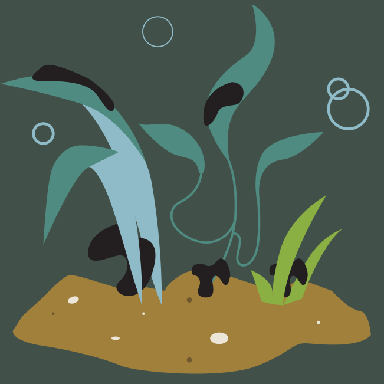
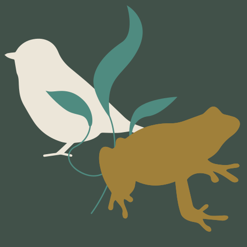
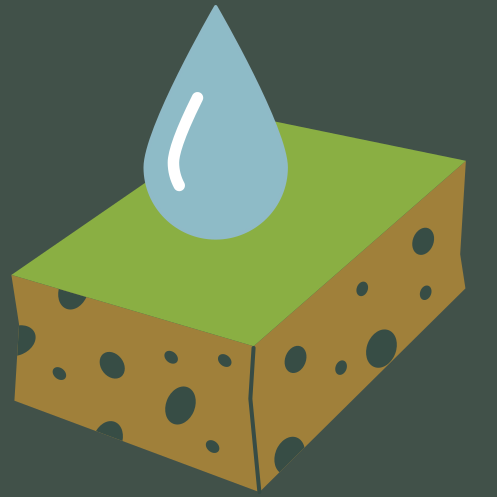
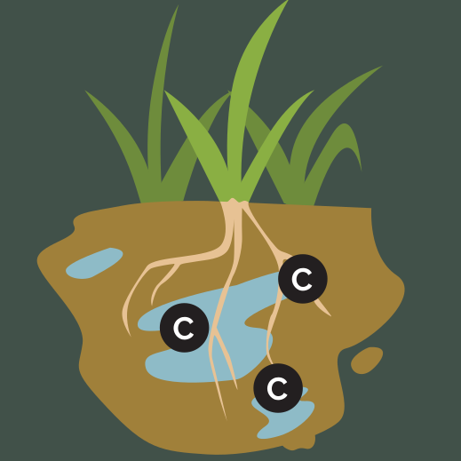
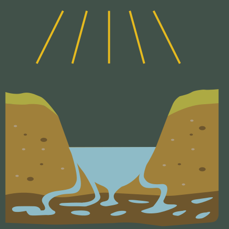
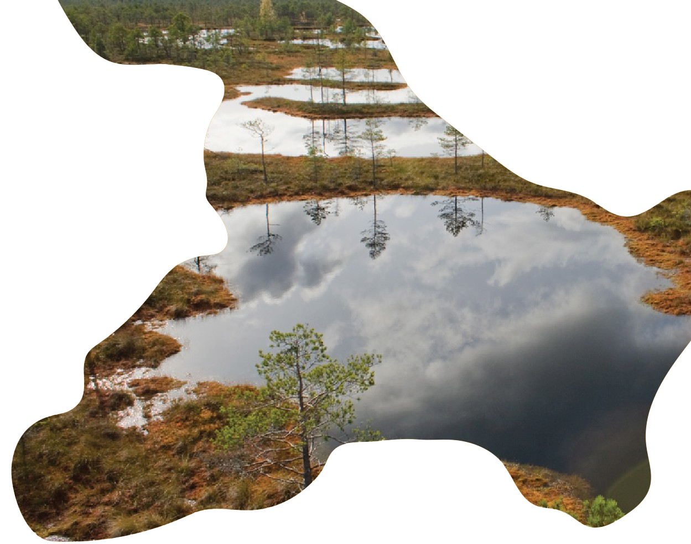
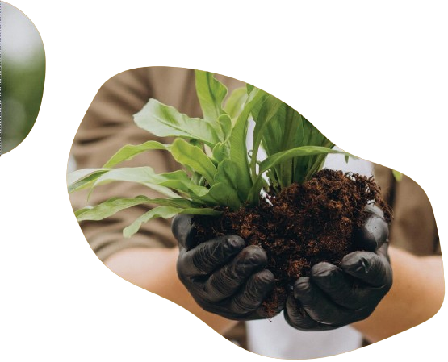
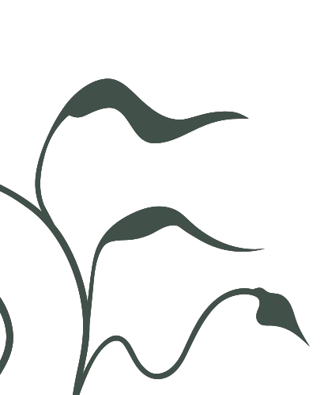

Šeit ir redzami mitrāji - upes paliene un vecupes posms. Gan vecupe, gan upes palienes pļava dabā darbojas kā filtrs, kas attīra piesārņoto ūdeni. Kā? Lietum līstot, ūdens ātrums samazinās, jo ceļā ir augi, krūmi un citi šķēršļi. Šie šķēršļi ļauj ūdenim plūst lēnāk un piesārņojuma un barības vielu daļiņām nosēsties un iesūkties augsnē.
Kad piesārņojums nonāk augsnē, tā noārdīšanā un piesaistē notiek dažādi sarežģīti procesi, kas ir raksturīgi tieši mitrājiem. Augu saknes daļu piesārņojuma uzņem un pārveido sev nepieciešamās vielās. Savukārt pārējais piesārņojums "nosēžas" nogulumos, kur tas vai nu tiek noglabāts, vai to pamazām noārda mikroorganismi.
Tā mitrāji nodrošina, ka "netīrais" ūdens neaizplūst tālāk un nepiesārņo upes, ezerus vai pazemes ūdeņus.
Kā mitrāji nodrošina dabisku aizsardzību pret plūdiem?
Ziemā, kūstot ledum upē, noris pavasara pali un applūst upes paliene. Mitrājs, tostarp attēlā redzamā upes paliene un vecupe, uzkrāj sevī pavasara palu vai spēcīgu lietavu ūdeņus, bet atbrīvo tos lēnām, darbojoties kā liels sūklis un tā veidojot dabisku ūdens aiztures zonu, kas pasargā no applūšanas apdzīvotas teritorijas upes lejtecē.
Apgabalos, kur mitrāji ir izzuduši, var būtiski palielināties plūdu risks.
Ko dara mitrāji?

Attīra ūdeni
Augi un augsne filtrē piesārņojumu un barības vielas

Uztur dabas daudzveidību
Dzīvotne dažādiem augiem un dzīvniekiem

Aizsargā pret plūdiem
Uzkrāj ūdeni kā sūklis un regulē ūdens līmeni upēs un ezeros

Mazina klimata pārmaiņas
Uzkrāj oglekli un ietekmē vietējo klimatu

Sargā ilgos sausuma periodos
Papildina ūdens nesējslāņus un uztur gruntsūdens līmeni
Sniedz dabas veltes
Ogas, ārstniecības augus un citas
LIFE MarshMeadows
Latvijas Dabas fonds kopā ar lauksaimniekiem projektā LIFE MarshMeadows atjauno
mitrājus vairāk nekā 700 ha platībā Latvijā - Sitas un Pededzes upju palienē un Lubāna mitrājā, kā arī Baltoji Vokė mitrājā Lietuvā.


Kāpēc mitrāji ir svarīgi?
Mitrājs ir vieta, kur sastopas zeme un ūdens, radot un uzturot dzīvību. Mitrājos ir liela bioloģiskā
daudzveidība un tie nodrošina
cilvēkiem svarīgus ekosistēmu
pakalpojumus.

Mitrāji mums ir vajadzīgi vairāk, nekā mēs domājam